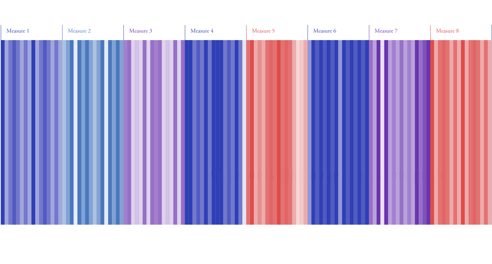

Pieces of classical music have a great deal of structure. Notes are very precisely combined to create intricate rhythmic and harmonic patterns. This underlying structure, however, is usually not evident to those without sufficient training in music theory. Futhermore, though some patterns can be heard from only listening, it is often necessary to consider the score of a piece and conduct a harmonic analysis—a careful study of its chordal structure.
Finding structure in music—or sound in general—is not very intuitive because our society rarely uses sound to organize information. The structure of classical music, futhermore, is based on precisely-defined axioms that require a non-trivial amount of study to properly understand.
Visual patterns, in contrast, are much easier to identify without formal study. We are trained from a young age to recognize patterns of hue and saturation because such skills are necessary in our society.
This visualization considers the Prelude from J.S. Bach's First Suite for Unaccompanied Cello (BWV 1007), found here, and attempts to make its underlying musical struture visible by representing musical patterns of harmony as visual patterns of color.
At the crux of this is a mapping of the Circle of Fifths, a way of structuring musical harmonic space, to the familiar Color Wheel, a way of strucutring visual color space. This is done as follows:
Like the Color Wheel does with colors, the Circle of Fifths positions all the musical keys on a circle with similar keys near each other and dissimilar keys across from each other. Mapping music to color in this way preserves the intuitive relation between keys as a similarly intuitive relation between colors.
Using the above mapping, this visualization constructs a color for each note of the prelude. It first assigns a base hue to each measure based on its musical key. Then, to each note within that measure it assigns a saturation based on the position of that note in the scale of the measure. There are 12 notes in a scale, and correspondingly, 12 levels of saturation. Notes that are farther away from the tonic (the first note) of the scale have an increasingly lesser level of saturation, while the tonic is colored at full saturation. Juxtaposing the colors for each note, the overall visualization looks as follows:
See the full visualization here.